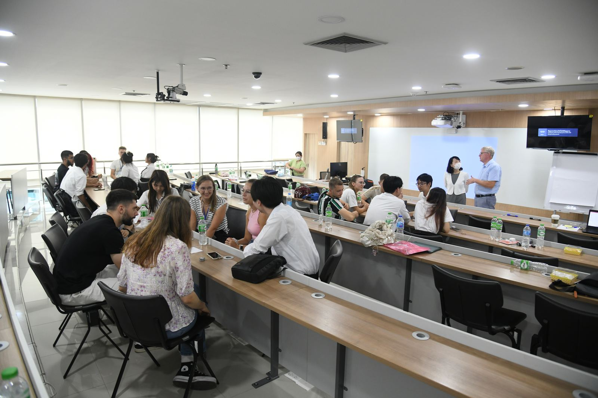
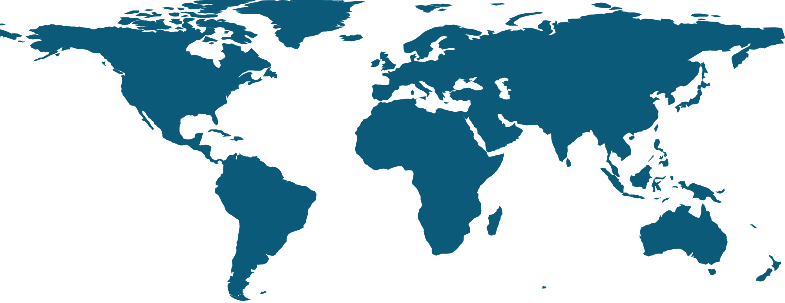
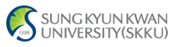
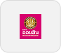

Global Partnerships
International & Partnerships
นานาชาติและความร่วมมือ (MOU)
โอกาสแลกเปลี่ยน เส้นทางปริญญาคู่ และเครือข่ายพันธมิตรทั้งในและต่างประเทศ
23องค์กรพันธมิตร
6ประเทศ
3+1ปริญญาคู่
Exchange & Double Degree
Exchange 3+1
โครงการแลกเปลี่ยนและปริญญาคู่
นิสิตหลักสูตรการจัดการธุรกิจโลก (GBM) ซึ่งสอนเป็นภาษาอังกฤษทั้งหลักสูตร มีเส้นทางปริญญาคู่แบบ 3+1
ดูหลักสูตร Global Business ManagementFrankfurt School of Finance & Management
เยอรมนี
สถาบันพันธมิตรสำหรับโครงการแลกเปลี่ยนและเส้นทางปริญญาคู่
Brokenshire College
ฟิลิปปินส์
ลงนามบันทึกข้อตกลงความร่วมมือ (MOU) ร่วมกับ มศว
University of York
สหราชอาณาจักร
คณะผู้แทนเยี่ยมชมคณะเพื่อหารือความร่วมมือทางวิชาการ
Partnerships by Region
Where Our Partners Are
พันธมิตรของเราอยู่ที่ใดบ้าง

- Asia4 ประเทศ · ไทย เกาหลีใต้ ญี่ปุ่น ฟิลิปปินส์21
- Europe2 ประเทศ · เยอรมนี สหราชอาณาจักร2
Partner Directory
All Partner Organisations
รายชื่อหน่วยงานที่ลงนาม MOU
International Academic สถาบันการศึกษาต่างประเทศ

Sungkyunkwan University (SKKU)สาธารณรัฐเกาหลี- Meiji Universityญี่ปุ่น
- Frankfurt School of Finance & Managementเยอรมนี · Exchange & 3+1
- Brokenshire Collegeฟิลิปปินส์ · MOU กับ มศว
- University of Yorkสหราชอาณาจักร · หารือความร่วมมือ
Domestic Academic สถาบันการศึกษาในประเทศ
- KMITLสถาบันเทคโนโลยีพระจอมเกล้าเจ้าคุณทหารลาดกระบัง
- Faculty of Social Sciences, SWUคณะสังคมศาสตร์ มศว
- Rajinibon Schoolโรงเรียนราชินีบน
- Sarasas Witaed Nakhon Pathomโรงเรียนสารสาสน์วิเทศนครปฐม
Government Agencies หน่วยงานภาครัฐ
- OCSCสำนักงาน ก.พ.
- NRCTสำนักงานการวิจัยแห่งชาติ (วช.)
- NIAสำนักงานนวัตกรรมแห่งชาติ
- ETDAสำนักงานพัฒนาธุรกรรมทางอิเล็กทรอนิกส์
- The Stock Exchange of Thailandตลาดหลักทรัพย์แห่งประเทศไทย

Government Savings Bankธนาคารออมสิน
Private Sector ภาคเอกชน
- Thailand Tax Auditor Associationสมาคมผู้สอบบัญชีภาษีอากรฯ
- FlowAccountภาคเอกชน
- Finansiaภาคเอกชน
- Big C Retailภาคเอกชน
- Staybridge Suitesภาคเอกชน
- SOHO Hospitalityภาคเอกชน
- The Blacksmithภาคเอกชน
- NISEภาคเอกชน
แสดงเฉพาะพันธมิตรที่คณะเผยแพร่ชื่อแล้ว อีกบางองค์กรอยู่ระหว่างยืนยันชื่อและโลโก้